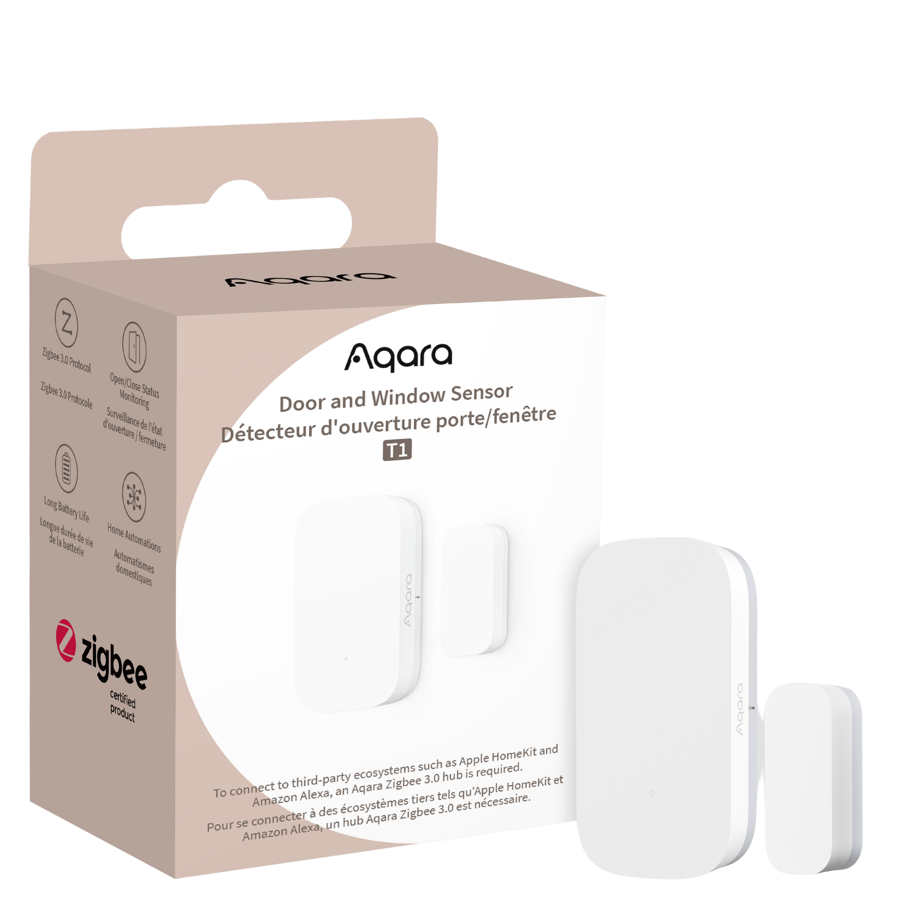
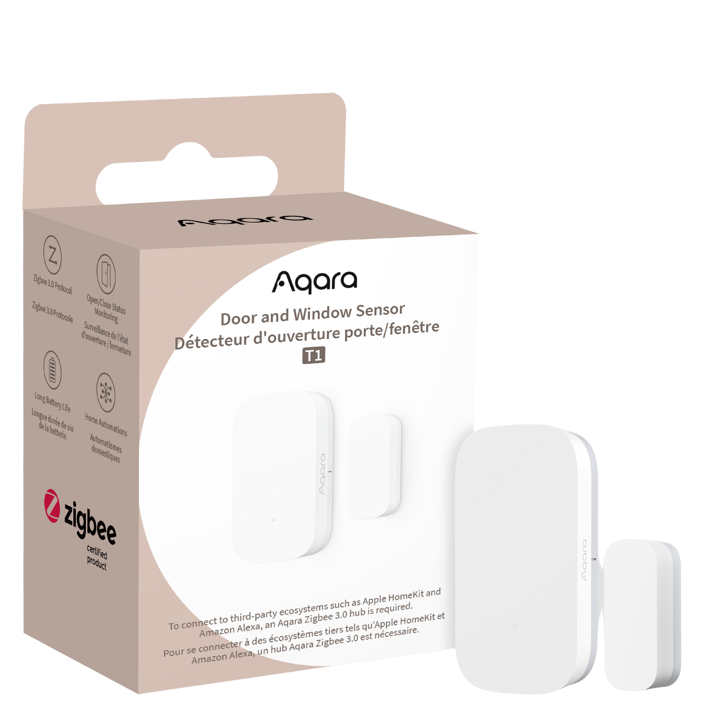

Door & Window Sensor T1
- The Aqara Door & Window Sensor T1 detects openings instantly, supports Zigbee 3.0 & Matter, offers 2+ years battery life, and enables smart home automations.
Historic Data Capture |
No Tools Needed |
Real Time Alert and Notification | 2-Year Battery Life |

 

Product Info
Description
The Aqara Door & Window Sensor T1 is a sleek, stick-on sensor that instantly detects when doors, windows—or even drawers and letterboxes—open or close, using a precise magnetic distance sensor. Forget tools: simply peel and stick it in place, and you’re ready to go.
With Zigbee 3.0 connectivity, it integrates seamlessly with the Aqara Hub and connects your smart home ecosystem to Apple HomeKit, Alexa, Google Home, SmartThings—and now even Matter support.
Despite its small footprint, this little gem delivers over two years of battery life on a single CR1632 cell—thanks to its energy-efficient design. It also supports OTA updates, keeping its performance smooth and future-proof.
Trigger clever automations with ease—whether it's switching on lights when you arrive home or arming an alarm at night, this sensor quietly keeps your home smarter, safer, and more convenient.
Key Features
- Smart, Versatile Sensor: Compact yet powerful, this sensor can be installed not only on doors and windows, but also on drawers, mailboxes, or even AC units – giving you peace of mind and endless possibilities.
- Multi-Ecosystem Support: When paired with an Aqara Hub, the Aqara Door and Window Sensor T1 integrates seamlessly with leading platforms such as Apple Home, Amazon Alexa, Google Home, and Matter. It also supports native integration with Samsung SmartThings and Yandex Smart Home.
- Seamless Automations with Aqara Home: Create personalised automations with other Aqara devices. For example, opening your front door in the evening can trigger your Aqara Wall Switch to automatically turn on the lights – ensuring a warm welcome every time you come home.
- Enhanced Security Notifications: Activate alarm mode when you're away or asleep. If a door or window is opened unexpectedly, your Hub will sound an alarm and instantly send a notification to your phone.
- Reliable and Energy-Efficient Technology: The Aqara Door and Window Sensor T1 accurately detects door and window status using a magnet-based system. Designed for long-lasting performance, one battery can power the sensor for over two years under normal use.
- OTA Update Support: The Aqara Door and Window Sensor T1 series now supports over-the-air (OTA) updates, improving stability and adding new functionality over time.
Specifications
| Colour | White |
| Model | DW-S03D |
| Battery | CR1632 |
| Wireless Protocol: | Zigbee 3.0 |
| Dimensions | 41 x 22 x 11 mm (1.61 x 0.87 x 0.43 in) |
| Maximum Detection Distance: | 22 mm |
| Operating Temperature | -10 °C ~ 45 °C (14 °F ~ 113 °F) |
| Operating Humidity | 0 - 95%RH, non-condensing |
| What's in the Box | Sensor Unit (with Sticker) x1, Magnet Unit x1, User Manual x1 |
Automations and Complementary Products
Click a product image to go to its page details
Scene: Lights That Know You're There
Never get left in the dark! When the door opens, the auto-off light timer pauses, keeping your lights on as long as the room's in use.
| Required Automation Products: | Door & Window Sensor T1 |
 Hub M3 |
 Motion Sensor P1 |
Automation Setup
IF (Condition): Door & Window Sensor T1 detects the door opening // THEN (Action): Pause the auto-off light timer
Scene: Monitor Existing AC Status
When the contact sensor detects that the AC is already on, it will prevent the IR controller from unnecessarily reactivating the AC.
| Required Automation Products: | Door & Window Sensor T1 |
Hub M3 |
IR Controller (Air Conditioner) |
Automation Setup
IF (Condition) : When attached to the AC, Door & Window Sensor T1 detects the AC is on // THEN (Action) : Block the IR controller from reactivating the AC
Scene: Save Energy When Doors or Windows Are Open
If a door or window is opened, the system will automatically turn off the thermostat to conserve energy and reduce your carbon footprint.
| Required Automation Products: | Door & Window Sensor T1 |
Hub M3 |
IR Controller (Air Conditioner) |
Automation Setup
IF (Condition) : Door & Window Sensor T1 detects a door or window opening // THEN (Action) : Turn off the thermostat
Scene: Automated Alert System
Part of the Aqara Home alert system, the sensor can arm automatically with a Presence Sensor, sending an instant alert if a door, drawer, or window opens while you're away.
| Required Automation Products: | Door & Window Sensor T1 |
Hub M3 |
Automation Setup
IF (Condition) - Door & Window Sensor T1 detects unexpected activity // THEN (Action) - Send an instant security alert
Product Support Documents
- Step by step installation instruction video:
Installation Video (00:02:36) - Product User Manual:
User Manual (PDF) - Product FAQs:
Frequently Asked Questions (PDF)